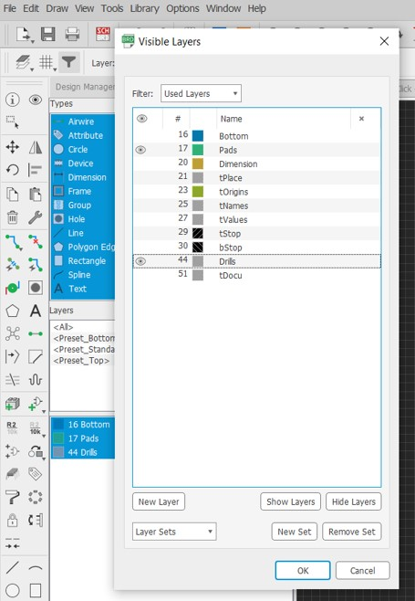

Overview
From paper sketches to rough copper boards, electronics production -specifically pcbs- is a multistep process. Though not the hardest in the core, it requires practice for clean production.
Index
- Software Setup
- Sketching and Defining
- Inserting and Wiring
- Layout Design and Routing
- Error
- Layers and Images
- FabModules
- Check and Export
- Execute
Software Setup
Eagle is pretty straightforward to install. Though in the setup, you might encounter a crash error. After installation, the software sometimes does not work properly. Try out the steps below:
Sketching and Defining
As usual and before bringing anything to life, we do paper sketches –then CAD – then CAM.
Below is a sketch for the circuit and connections...
To electronically represent this sketch, we need to insert Eagle components and do the wiring through the software. Here is a quick tutorial on how to add and wire different parts of your sketched circuit.
Here are the specific components used for this project.
You should end up with something like this

Use the labels feature to clean the design and create better, more readable documentation.
Layout Design and Routing
Now switch your view for a little bit of a puzzle

Air-wire all the components in a most logical order for a small, neat, functional pcb. Here is a quick guide on how to do so.
Reduce the outer frame size to fit the pcb without extra useless space.
Pre-export Checklist
Next Up
To export the CAD files, open view/layers then hide everything and display pads and bottom layers alone; in settings/misc/display drills. Export png. Show dimensions alone. Export png. Show drills alone. Export png.
Flip these images horizontally to eliminate the mirror effect resulting from drawing on the bottom layer instead of the top. Only with the drills image we will need to fill in the black space in the image.
CAM system used, FabModules, defines the path of the machine based on the color flip from black to white or vise versa. The drills image has two different borders for each drill; this way the output will be separated islands of copper from the entire circuit. A proposed solution for this is to use jumpers but they will look awful and are impractical. Simply fill the big black color with white color and voila, problem solved.
FabModules: CAM
Open the link , right click, open server programs, pcb png, a bunch of function should appear
Ps: they are built to interact with as functions. You literally pull the output from one box and drag it into the input of another. Import the first image, set the cut depth and offset. High offsets might result in a broken pcb, specialy if the machine is not super duper good. 2 is an average offset. Click calculate and check the design
The previous design for example is self-intersecting everywhere. It is like a sea of electrons floating everywhere. These redlines represent the machine’s movement in the air.
This is a way cleaner design will less offsets. If the number of offsets is important and unchangeable, we might use a smaller endmill; but this is dependent upon the accuracy of the machine.
About the frame, I set a 1 offset yet the view was like…
The problem was with the black/white thing. Make sure to import a frame in the eagle design board to maintain the dimensions of the exported image. When I did not import a frame, the software stretched the image to fill the screen, creating that extra boundary.
Now right click anywhere, modules, open server programs, save.
Press save and that is it! Find a machine to print these files. Calibrate the bed and goodluck debugging whatever pops up. :)